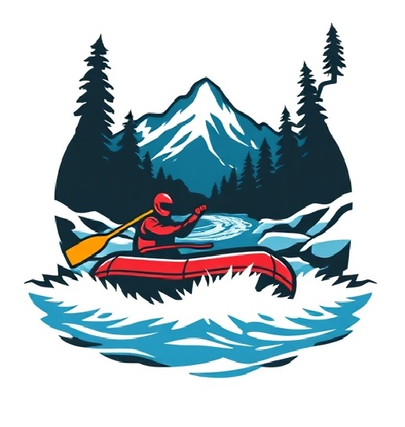
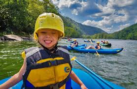
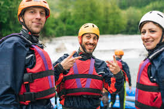

Overview
Purpose
To provide a comprehensive guide and booking platform for rafting enthusiasts of all levels.
Audience
Outdoor adventurers, thrill-seekers, families looking for fun activities, and anyone interested in rafting excursions.
Branding
Website Logo
Content
Introduction
Welcome to Rafting Adventures, your ultimate destination for planning and experiencing exhilarating rafting trips. Whether you're a seasoned rafter or a beginner, we provide all the information and booking services you need for an unforgettable adventure on the water.
Rafting Trips
Discover a variety of rafting trips tailored to different skill levels and preferences. From calm family-friendly floats to adrenaline-pumping rapids, we have something for everyone. Our detailed trip descriptions, safety information, and booking options ensure a seamless experience.

Equipment & Safety
Learn about the essential equipment needed for a successful rafting trip. Our comprehensive guides cover everything from choosing the right raft to personal safety gear. We also provide important safety tips and best practices to ensure a safe and enjoyable experience for all participants.
Community & Resources
Join our community of rafting enthusiasts to share experiences, tips, and advice. Our forum, blog, and resource library offer a wealth of information for both new and experienced rafters. Stay updated on the latest news, events, and trends in the world of rafting.
